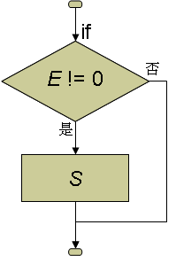
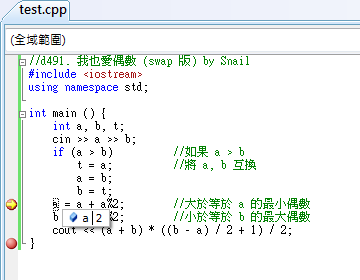
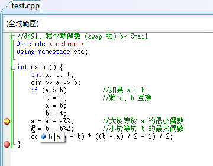
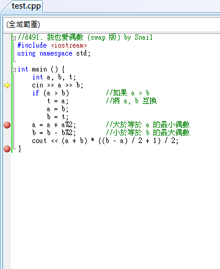

<!DOCTYPE html>
<html></html>
<head>
  <title>第三章 關係運算子與 if 判斷</title>
  <meta charset="UTF-8">
  <meta content="text/html; charset=UTF-8" http-equiv="content-type">
  <link rel="stylesheet" type="text/css" href="style.css">
  <link rel="stylesheet" href="https://maxcdn.bootstrapcdn.com/bootstrap/3.3.7/css/bootstrap.min.css">
  <script src="https://ajax.googleapis.com/ajax/libs/jquery/3.2.0/jquery.min.js"></script>
  <script src="https://maxcdn.bootstrapcdn.com/bootstrap/3.3.7/js/bootstrap.min.js"></script>
  <link href="style.css" rel="stylesheet" type="text/css">
</head>
<body>
  <nav class="navbar navbar-default" role="navigation">
    <div class="container-fluid">
      <div class="navbar-header"><a class="navbar-brand" href="#">板中資訊社</a></div>
      <div>
        <ul class="nav navbar-nav">
          <li class="active"><a href="#">C++</a></li>
          <li class="dropdown"><a class="dropdown-toggle" href="#" data-toggle="dropdown">語法<b class="caret"></b></a>
            <ul class="dropdown-menu">
              <li><a href="ch01.html">第一章 立刻動手</a></li>
              <li><a href="ch02.html">第二章 變數與指定運算子「=」</a></li>
              <li><a href="ch03.html">第三章 比較運算子與 if 陳述式</a></li>
              <li><a href="ch04.html">第四章 迴圈</a></li>
              <li><a href="ch05.html">第五章 基礎資料型別</a></li>
              <li><a href="ch06.html">第六章 字元與字串</a></li>
              <li><a href="ch07.html">第七章 陣列</a></li>
              <li><a href="ch08.html">第八章 自定義函數與資料型別</a></li>
              <li><a href="ch09.html">第九章 排序</a></li>
            </ul>
          </li>
        </ul>
      </div>
    </div>
  </nav>
  <h1>第三章 關係運算子與 if 判斷</h1>
  <h2>3.1 比較運算子</h2>
  <p>到目前為此，我們學過的「運算子」包括了 2 個「輸出入運算子」 (<< 及 >>)、「指定運算子」 (=)、5個「算術運算子」(+, -, *, /, %) 等，你也可以用「算術運算子」和「指定運算子」結合成「複合指定運算子」(+=, -=, *=,/=, %=)。</p>
  <p>在這些運算子當中，除了回傳值以外，沒有任何「副作用」的就只有這 5 個算術運算子了，它們單純地將前後的兩個「運算元」拿來運算，並回傳運算的結果。</p>
  <p>除了這些算術運算子以外，C++ 也定義了 6 個沒有任何「副作用」的「比較運算子」：</p>
  <table>
    <tr>
      <th> >    </th>  
      <th> 大於</th>
    </tr>  
    <tr>
      <th> >=    </th>  
      <th> 大於等於</th>
    </tr>  
    <tr>
      <th> <     </th>  
      <th>小於</th>
    </tr>  
    <tr>
      <th> <=    </th>  
      <th>小於等於</th>
    </tr>  
    <tr>
      <th> ==     </th>  
      <th>等於</th>
    </tr>  
    <tr>
      <th> !=     </th>  
      <th>不等於</th>
    </tr>
  </table>
  <p>這些比較運算子則可以用來比較兩個值，然後告訴你這樣的關係是否真的存在。以下面的運算式為例：</p>
  <p>
    <script src="https://gist.github.com/allem40306/3fb9e4fb6df5ac631df057c3e5f47797.js?file=ch03-01.cpp"></script>
  </p>
  <p>它就是要判斷 123 是不是「真的」小於 456。因此，它的回傳值應該是「真、假」，「成立、不成立」，「True、False」，「T、F」之類的結果。倒底 C++是如何回傳它判斷回傳的結果呢？我們可以執行以下的陳述式來看看它的回傳值。</p>
  <script src="https://gist.github.com/allem40306/3fb9e4fb6df5ac631df057c3e5f47797.js?file=ch03-02.cpp"></script>
  <p>這個程式在螢幕上輸出了一個 1。也就是說，C++ 是以 1 來代表「真、成立、True」等意義，相對的，它以 0 來代表「假、不成立、False」等意義。</p>
  <p>注意，上面這個陳述式一定要加上小括號才能正確地執行。查一下<a href="http://pcshic.github.io/start/appendix.html#start.appendixB">附錄的運算子優先順序</a>，我們發現 << 的優先順序為 6、< 的優先順序為 7，也就是說，在沒有括號的情況下，<< 會比 < 先執行，結果上面的運算式就成了：</p>
  <script src="https://gist.github.com/allem40306/3fb9e4fb6df5ac631df057c3e5f47797.js?file=ch03-03.cpp"></script>
  <p>而 cout << 123 的回傳值為 cout，於是在輸出了 123 之後，這個陳述式就變成了：</p>
  <script src="https://gist.github.com/allem40306/3fb9e4fb6df5ac631df057c3e5f47797.js?file=ch03-04.cpp"></script>
  <p>而 cout 是沒有辦法和 456 比大小的。</p>
  <p>利用比較運算子會回傳 0 或 1 的特性，我們可以試著去解之前做過的一些題目：</p>
  <li><a href="https://zerojudge.tw/ShowProblem?problemid=d073">d073. 分組報告</a></li>
  <p>之前說過，這題就是要求 n % 3 的商，無條件進位。但是「/」運算子是「小三除法」，所得的商為「無條件捨去」。我們可以用 n / 3 求商，但是結果不能整除時，也就是「餘數不等於 0」時，所得的結果要再加 1。以下的運算式：</p>
  <script src="https://gist.github.com/allem40306/3fb9e4fb6df5ac631df057c3e5f47797.js?file=ch03-05.cpp"></script>
  <p>當 n 不是 3 的倍數時，由於餘數不等於 0，所以會回傳代表「true」的 1。因此，這一題的答案也可以寫成：</p>
  <script src="https://gist.github.com/allem40306/3fb9e4fb6df5ac631df057c3e5f47797.js?file=ch03-06.cpp"></script>
  <p>和之前的答案比較起來，這樣的寫法長了一點點，但是不失為比較運算子的一種用法。</p>
  <li><a href="https://zerojudge.tw/ShowProblem?problemid=d063">d063. 0 與 1</a></li>
  <p>這一題也可以很簡單地利用「比較運算子」來解：</p>
  <p>
    <script src="https://gist.github.com/allem40306/3fb9e4fb6df5ac631df057c3e5f47797.js?file=ch03-07.cpp"></script>
  </p>
  <p>看懂了嗎？如果輸入的 x 等於 0，那麼 (x == 0) 就是「真的」，因此會回傳並輸出代表「真」的 1，反之則輸出代表「假」的 0。</p>
  <p>
    <li><a href="https://zerojudge.tw/ShowProblem?problemid=d058">d058. BASIC 的 SGN 函數</a></li>
  </p>
  <p>題目大意：輸入的 x 大於 0 時輸出 1，小於 0 時輸出 -1，等於 0 時輸出 0。</p>
  <p>這題就難一點了，因為它的輸出有三種可能：-1, 0, 和 1。一個比較運算子只有0和1兩種可能的結果，要求出三種可能的值，至少要有兩個比較運算子。如果你真的想不出怎麼做，請不要灰心。即使是程式的老手，叫他們不准用 if 陳述式(下一節才教)而只用算術及比較運算子來解這題，他們也是要傷點腦筋的。以下是筆者提供給你的參考解法：</p>
  <script src="https://gist.github.com/allem40306/3fb9e4fb6df5ac631df057c3e5f47797.js?file=ch03-08.cpp"></script>
  <p>這題寫不出來沒有關係，但是你至少要看得懂喔！</p>
  <li><a href="https://zerojudge.tw/ShowProblem?problemid=d460">d460. 山六九之旅</a></li>
  <p>題目大意：山六九樂園的門票價格：0~5歲免費，6~11 歲 590 元，12~17 歲 790 元，18~59 歲 890 元，60歲以上 399 元。輸入年齡 a，輸出門票價格。</p>
  <p></p>這題的輸出又更複雜了，一共有五種可能的值，而且它們的差不是1。所以這不是把比較運算的結果拿來加加減減就可以算出來的，需要用乘法去把比較運算所得到的結果放大。
  <p></p>
  <p>以下是筆者提供的參考解法：</p>
  <script src="https://gist.github.com/allem40306/3fb9e4fb6df5ac631df057c3e5f47797.js?file=ch03-09.cpp"></script>
  <p>隨著年齡的增加，加上票價的差額，最後就得到我們要的答案了。</p>
  <p>最後留下一題相對簡單的題目給你練習囉！</p>
  <li><a href="https://zerojudge.tw/ShowProblem?problemid=d068">d068. 該減肥了！</a></li>
  <h2>3.2 if 陳述式 (max 函數)</h2>
  <p>
    在上一節談到「比較運算子」時，我們的練習題似乎都好難。其實「比較運算子」的運算結果應該是「true」或「false」，只是在 C++ 中以 1
    來代表「true」、0 來代表「false」，而這些「true」或「false」(1 或 0)原本的設計是要給if及while陳述式作為條件判斷之用的，而不是直接當作數值來運算。上一節這樣的安排只是為了讓你更清楚比較運算子的運作方式。
  </p>以上一節留給你當作業的「d068. 該減肥了！」為例，你的答案很可能會像下面這個程式：
  <p>
    <script src="https://gist.github.com/allem40306/3fb9e4fb6df5ac631df057c3e5f47797.js?file=ch03-10.cpp"></script>
  </p>
  <p>但是這個並不是一般程式師最直覺的反應，因為他們知道有另一個更強大更好用的指令來處理這一類的問題，那就是 if 陳述式。</p>
  <p>if 陳述式的語法如下：</p>
  <p>if ( E )</p>
  <li>E: 運算式 (Expression)</li>
  <li>S: 陳述式 (Statement)</li>
  <p>if 陳述式的流程圖如下：</p>
  <p></p>
  <p>當 ( ) 中的運算式 E 的回傳值不為 0 時，程式就會去執行陳述式 S，否則 (E 的回傳值為 0 時) 就跳過陳述式 S。注意，這裡的( ) 是 if 陳述式的語法的一部分，在 if 之後一定要有一對 ( )，它不是用來改變優先順序的括號，不可以省略。</p>
  <script src="https://gist.github.com/allem40306/3fb9e4fb6df5ac631df057c3e5f47797.js?file=ch03-11.cpp"></script>還記前面提過，空白和換行都是「白空白」，對 C++ 程式來說意義是一樣的。因此上面這個程式中的 if 陳述式寫成
  <p>
    <script src="https://gist.github.com/allem40306/3fb9e4fb6df5ac631df057c3e5f47797.js?file=ch03-12.cpp"></script>
  </p>
  <p>和寫成</p>
  <script src="https://gist.github.com/allem40306/3fb9e4fb6df5ac631df057c3e5f47797.js?file=ch03-13.cpp"></script>
  <p>意義是完全相同的。但是我們會讓 w -= 1; 這一行比 if (w > 50) 縮進去 4 格，這樣我們可以很容易看得出來 w -= 1; 是屬於 if (w > 50) 的一部份，而不是獨立於 if 之外的陳述式。</p>
  <p>如果所輸入的體重大於 50 時，w > 50 就會回傳 1。而根據 if 陳述式的定義，如果 ( ) 中的回傳值不為0，程式就會去執行其後的陳述式 w -= 1;，把體重減 1。可是如果輸入的體重小於等於 50 時，w > 50 就會回傳0，這時候程式就會跳過陳述式 w -= 1;，體重就不會改變。</p>
  <p>執行完這個 if 陳述式後，w 裡就會有離開中心時的體重，再用 cout << 把 w 輸出就可以了。</p>
  <li><a href="https://zerojudge.tw/ShowProblem?problemid=d460">d460. </a></li>
  <p>運用 if 陳述式與上面所提的技巧，也可以很容易的解出這題。</p>
  <script src="https://gist.github.com/allem40306/3fb9e4fb6df5ac631df057c3e5f47797.js?file=ch03-14.cpp"></script>
  <p>這樣寫是否有問題？</p>
  <p>
    在第2的 if 陳述式中，執行到 6 <= a 時不論a為任何數值，運算出來的結果不是 1 (true) 就是 0
    (false)，再執行 < 12 時結果恆為 1，一樣會輸出 590。同理，第3及第4的 if 陳述式，一樣會輸出 790 及 890。
  </p>
  <p>那要怎麼寫才正確呢？請先看 3.7 邏輯運算子 內容中的 && 運算子陳述；內容如下：</p>
  <p>在討論「d460. 山六九之旅」的問題規則如下：</p>
  <ol>
    <li>0~5歲兒童免票</li>
    <li>兒童票 ( 6~11 歲)：590元</li>
    <li>青少年票 ( 12~17 歲)：790元</li>
    <li>成人票 (18~59 歲)：890元</li>
    <li>敬老票 ( 60歲以上)：399元</li>
  </ol>
  <p>其實我們也可以直接把上面五條規則直接翻譯成五個獨立的 if 陳述式。第一個規則很簡單，只要寫成這樣就可以了：</p>
  <script src="https://gist.github.com/allem40306/3fb9e4fb6df5ac631df057c3e5f47797.js?file=ch03-15.cpp"></script>
  <p>第二條規則就比較麻煩一點，6 <= a < 12，在邏輯上沒有問題，但在程式執行上就會遇到困難，因為需同時判斷年齡大於等於6歲(6 <= a )，而且年齡小於12歲 ( a < 12 )，而 if 陳述式的 ()內判斷的值只有一個，這時就需要用一個運算子把這兩個條件的回傳值先「合併」起來。要做這種「合併條件」工作的運算子一共有兩個，它們分別是&& (and) 及|| (or, 在鍵盤上和 \ 同一個鍵，搭配 Shift 使用)，稱為「邏輯運算子」。</p>
  <p>&& 是「而且」的意思。參考下表，只有當 E1 及 E2 都不為 0 時，E1 && E2 的回傳值才會是 1；當 E1 及 E2 之中只要有一個為 0 時，E1 && E2 的回傳值就會是 0。</p>
  <table>
    <tr>
      <th rowspan="2" colspan="2">E1 && E2</th>      
      <th colspan="2">E2</th>
    </tr>    
    <tr>
      <td>=0</td>
      <td>=1</td>
    </tr>   
    <tr>
      <th rowspan="2">E1</th>     
      <td>=0</td>     
      <td>0</td>     
      <td>0</td>
    </tr>    
    <tr>
      <td>=1</td>      
      <td>0</td>      
      <td>1</td>
    </tr>
  </table>
  <p>|| 是「或者」的意思。參考下表，當 E1 及 E2 之中只要有一個不為 0 時，E1 || E2 的回傳值就會是 1；只有當 E1 及 E2 都為 0 時，E1 || E2 的回傳值才會是 0。</p>  
  <table>
    <tr>
      <th rowspan="2" colspan="2">E1 || E2</th>      
      <th colspan="2">E2</th>
    </tr>    
    <tr>
      <td>=0</td>
      <td>=1</td>
    </tr>   
    <tr>
      <th rowspan="2">E1</th>     
      <td>=0</td>     
      <td>0</td>     
      <td>1</td>
    </tr>    
    <tr>
      <td>=1</td>      
      <td>1</td>      
      <td>1</td>
    </tr>
  </table>
  <p>於是第二條的規則「如果 年齡大於等於6歲，但不滿12歲，付590元」便可以寫成：</p>
  <script src="https://gist.github.com/allem40306/3fb9e4fb6df5ac631df057c3e5f47797.js?file=ch03-16.cpp"></script>
  <p>如果 a 等於 7，那麼 a<=6 && a<12 的求值過程如下：</p>
  <table>
    <tr>
      <td>6</td>
    </tr>  
    <tr>
      <td>→ 1 && 1</td>
    </tr>  
    <tr>
      <td>→ 1</td>    
      <td></td>
    </tr>
  </table>
  <p>因此這一題的正解：</p>
  <script src="https://gist.github.com/allem40306/3fb9e4fb6df5ac631df057c3e5f47797.js?file=ch03-17.cpp"></script>
  <li><a href="https://zerojudge.tw/ShowProblem?problemid=d065">d065. 三人行必有我師</a></li>
  <p>運用 if 陳述式與上面所提的技巧，你也可以很容易地就解出這題了。</p>
  <script src="https://gist.github.com/allem40306/3fb9e4fb6df5ac631df057c3e5f47797.js?file=ch03-18.cpp"></script>
  <p>這樣是否正確？當 a 與 b 題數相等( 其中有兩個或三個題數相等 )時會有什麼結果？發現沒有任何輸出！</p>
  <p>那換成這樣寫呢？在 > 的部分都變成 >=</p>
  <p>
    <script src="https://gist.github.com/allem40306/3fb9e4fb6df5ac631df057c3e5f47797.js?file=ch03-19.cpp"></script>
  </p>
  <p>又有什麼問題呢？當 a 與 b 題數相等( 其中有兩個或三個題數相等 )時，結果是？發現至少 2 ~ 3 個輸出！</p>
  <p></p>
  <p>正確的寫法：</p>
  <p>
    <script src="https://gist.github.com/allem40306/3fb9e4fb6df5ac631df057c3e5f47797.js?file=ch03-20.cpp"></script>
  </p>
  <p>有沒有發現善用 = ，可以解決此題多重判斷的問題！</p>
  <p></p>
  <p>這題又可以這樣解，這次我們把這題改成填空題好了。</p>
  <p>
    <script src="https://gist.github.com/allem40306/3fb9e4fb6df5ac631df057c3e5f47797.js?file=ch03-21.cpp"></script>
  </p>
  <p>上面的程式少了兩個 if 陳述式，你能正確地填入並 AC 這題嗎？</p>
  <p></p>
  <h3>3.2.1 max函數</h3>
  <p>C++ 提供了一個「樣板函數」max ()，使用時你必須在 () 中放兩個相同型態的值，中間以逗號隔開。它會回傳這兩個值中較大的那一個。以下面這個程式片段為例：</p>
  <script src="https://gist.github.com/allem40306/3fb9e4fb6df5ac631df057c3e5f47797.js?file=ch03-22.cpp"></script>
  <p>上面的程式片段執行完時，c 的值就會等於 5。思考一下，這個「樣版函數」max () 樣版函數能不能用來取代「d065. 三人行必有我師」的程式碼中的 if 陳述式呢？</p>
  <p>
    <script src="https://gist.github.com/allem40306/3fb9e4fb6df5ac631df057c3e5f47797.js?file=ch03-23.cpp"></script>
  </p>
  <p>你也可以把第 8 行的運算式直接代入第 9 行，程式就變成了：</p>
  <p>
    <script src="https://gist.github.com/allem40306/3fb9e4fb6df5ac631df057c3e5f47797.js?file=ch03-24.cpp"></script>
  </p>
  <p>即然一個式子就可求出來了，那麼 teacher 這個變數也不需要了：</p>
  <p>
    <script src="https://gist.github.com/allem40306/3fb9e4fb6df5ac631df057c3e5f47797.js?file=ch03-25.cpp"></script>
  </p>
  <h2>3.4 複合陳述式 (swap 函數)</h2>
  <p>d491. 我也愛偶數 (swap 版)</p>
  <p>
    這個題目和「d490. 我也愛偶數」一模一樣，唯一的差別在它輸入測試資料的時候，並不保證 a ≤ b。可是如果 a > b
    時，我們的程式就會出現錯誤。因此我們的程式在開始計算時，需要先去判斷 a 是否大於 b，如果是的話，就需要把 a, b 的值互換。
  </p>
  <script src="https://gist.github.com/allem40306/3fb9e4fb6df5ac631df057c3e5f47797.js?file=ch03-26.cpp"></script>
  <p>看也知道上面的陳述式不能執行。將兩個變數的值互換的過程，可以把它想像成將兩杯不同的飲料 (a 杯與 b 杯) 互換，我們需要去找另一個空杯 (t 杯) 作為暫時存放其中一杯飲料的容器，才能順利將 a, b 兩杯飲料的內容互換。其過程如下：</p>
  <li>將 a 杯倒入 t 杯。 </li>
  <li>將 b 杯倒入 a 杯。 </li>
  <li>將 t 杯倒入 b 杯。</li>
  <script src="https://gist.github.com/allem40306/3fb9e4fb6df5ac631df057c3e5f47797.js?file=ch03-27.cpp"></script>
  <p>要注意 = 運算子的方向，t = a 是代表將 a 的值指定給變數 t，資料是從 = 的右邊跑到 = 的左邊，初學者可能不太習慣。在上面這三個陳述式執行過後，a 與 b 的內容就互換過來了。將這段程式碼套入之前「d490. 我也愛偶數」的程式中如下：</p>
  <script src="https://gist.github.com/allem40306/3fb9e4fb6df5ac631df057c3e5f47797.js?file=ch03-28.cpp"></script>
  <p>開始執行這個程式，輸入 5 2，程式輸出 6，完全正確！它的確把 a, b 的內容換過來了！但是當我們輸入 2 5 時，程式竟然輸出 -6！(也有可能不是 -6，而是其他的值)。</p>
  <p>倒底是哪裡出問題了？在告訴你答案之前，筆者要先介紹一下如何使用 VC++ 的偵錯功能。</p>
  <p>記得中斷點吧？到目前為止，我們只把中斷點用來讓程式結束離開之前所停下來讓我們看一下程式輸出的結果，其實中斷點真正的用途在於偵錯。請你在程式的第12 行也加上一個中斷點，然後開始執行程式。第一次我們仍然輸入 5 2，按 Enter之後程式便會停在那一行。這時候，請你把滑鼠游標移到程式中任何一個變數 a 上，VC++ 就會顯示當時變數 a 的值為 2，再移到變數 b上，它就會顥示當時變數 b 的值為5，證明a,b的值的確已經正確地互換了，所以執行的結果也會是正確的。</p>
  <p>這時候如果你不想繼續執行下去，而希望重頭開始另一次的測試時，可以按工具列上的  (重新啟動) 按鈕，(或是在主選單選「偵錯 /重新啟動」)，它就會直接從頭開始。 這次我們輸入 2 5，按 Enter 後程式一樣在第 12 行停下來，這時候我們再用滑鼠去檢查 a 與 b的值，理論上 a 並沒有大於 b，所以它們的值應該維持 2 與 5 不變。可是我們發現 a 被改成 5 也就算了，b 竟然變成了 0(也有可能不是 0 哦！待會兒會告訴你為什麼。)，這是怎麼一回事？</p>
  <p>為了追根究底，我們再來使用另一個偵錯工具--「逐步執行」。要讓程式在某一個地方停下來，除了設中斷點以外，還有另一個辦法--「執行至游標處」。請用滑鼠在 cin >> a >> b;那行的任何位置按一下右鍵，然後選「執行至游標處」，程式便會開始執行，然後就會停在這一行。</p>
  <p>請你在工具列中找到三個追蹤程式執行用的按鈕如下： </p>
  <p>左邊那個就叫作「逐步執行」，但是那不是我們要的，因為 cin >> a >> b;是系統的輸入動作，如果你按左邊那個「逐步執行」，程式會試圖進入系統的內部函數，可是這些系統的內部函數並沒有提供原始檔來讓你偵錯。而右邊那個叫「跳離函式」，它會把目前的函式也就是 main ()執行完畢並跳出，這顯然也不是我們要的。中間那個叫作「不進入函式」，意思是要「逐步」執行程式，可是如果遇到呼叫其他函式時，就直接把那個函式執行完畢，而不是跳進去偵錯。這個才是我們要用的那個按鈕！</p>
  <p>這時候請你按一下「不進入函式」，那個黑底的 DOS 畫面又會出理，等你輸入變數 a, b 的值。我們就輸入 2 5 然後按Enter。程式這時候停在下一行的 if 陳述式。按照我們的想法，因為 a 並沒有大於b，因此如果我們再按一下「不進入函式」，那麼程式應該會跳過下面 3 行陳述式，而直接跳到 a = a + a%2;那一行。可是當我們真的按下去時，發現它只跳過一行，而停在 a = b; 那一行！</p>
  <p>原來 if 陳述式的 () 中的運算式回傳值為 0 時，它只會跳過緊跟在 () 後面的那個陳述式。</p>
  <p>此時你應該可以了解為什麼 a 會變 5 了。至於 b 為什麼會變 0 呢？由於我們的 if 陳述式跳過了 t = a; 這個陳述式，因此 t的值並未設定，所以當我們執行 b = t; 時，就把這個未設定的 t 值設定給了 b。在 C++ 中，未設定的變數值不一定會是 0哦，而是原來殘留在記憶體內的值，只是這個值常常會是 0。</p>
  <h3>複合陳述式</h3>
  <p>可是這樣我們的程式就會有問題啦！當我們要跳過好幾個陳述式時該怎麼辦？這時候我們可以用「複合陳述式」(CompoundStatement)。所謂的「複合陳述式」就是把若干個陳述式用大括號包起來，在程式的語法上，它可被視為一個陳述式。以我們的程式為例，我們可以把要跳過的三個陳述式用大括號包起來，如下：</p>
  <script src="https://gist.github.com/allem40306/3fb9e4fb6df5ac631df057c3e5f47797.js?file=ch03-29.cpp"></script>
  <p>為了程式更容易閱讀，我們會把它們分行：</p>
  <script src="https://gist.github.com/allem40306/3fb9e4fb6df5ac631df057c3e5f47797.js?file=ch03-30.cpp"></script>
  <p>有些程式師為了讓程式看起來不會太鬆散，會把 if (a > b)和左大括號接成一行。但是千萬不要把右大括號也接在前一行的後面，因為我們需要有一個符號來明顯地標示出 if 陳述式的結尾。</p>
  <p>完整的程式如下：</p>
  <script src="https://gist.github.com/allem40306/3fb9e4fb6df5ac631df057c3e5f47797.js?file=ch03-31.cpp"></script>
  <p>這個程式就可以 AC 了，趕快去試一下吧！</p>
  <h3>swap () 函數</h3>
  <p>在寫程式時，把兩個變數的內容互換是常見的工作，因此 C++ 很貼心地為我們加了 swap () 這個「樣板函數」，使用時只要把要交換內容的兩個變數放在 () 中並用逗號隔開來就可以了。因此上面程式的</p>
  <script src="https://gist.github.com/allem40306/3fb9e4fb6df5ac631df057c3e5f47797.js?file=ch03-32.cpp"></script>
  <p>可以改寫成</p>
  <script src="https://gist.github.com/allem40306/3fb9e4fb6df5ac631df057c3e5f47797.js?file=ch03-33.cpp"></script>
  <h2>3.5 else 子句 (? : 運算子)</h2>
  <li><a href="https://zerojudge.tw/ShowProblem?problemid=d064">d064. ㄑㄧˊ 數？</a></li>
  <p>這個題目的輸出不是數值，而是字串，因此沒有辦法只用算術運算子或是關係運算了就算出答案來。既然我們已經學過了 if 陳述式，那麼我們就用它來解這一題。</p>
  <script src="https://gist.github.com/allem40306/3fb9e4fb6df5ac631df057c3e5f47797.js?file=ch03-34.cpp"></script>
  <p>如果有兩個連續的 if 陳述式，它們的條件完全相反，也就是當其中一個 if 陳述式的條件成立時，另一個 if陳述式的條件必定不成立，那麼這兩個 if 陳述式就可以利用 else 結合成一個。以上面的程式為例，(i%2 != 0) 和 (i%2 ==0) 就是完全相反的條件，因為一個整數它不是奇數，就是偶數。這時候我們就可以用 else 來把兩個 if 陳述式結合成一個。</p>
  <script src="https://gist.github.com/allem40306/3fb9e4fb6df5ac631df057c3e5f47797.js?file=ch03-35.cpp"></script>
  <p>加上了 else 子句以後，if 陳述式的語法定義變成了：</p>
</body>